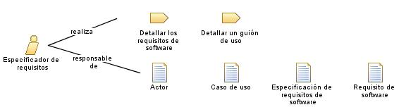

| Rol: Especificador de requisitos |
 |
|
Relaciones
 |
|
| Adicionalmente realiza | |
|---|---|
| Modifica | |
| Uso del proceso | |
Descripción principal
Personal
| Habilidades |
Una persona que actúe en este rol necesita buenas habilidades de comunicación, para expresarse verbalmente y por escrito. El conocimiento de la empresa y dominio tecnológico también son importantes pero no suelen ser necesarios para todos los miembros del equipo que desempeñen este rol. Para que este rol se desempeñe con eficacia, la persona que lo lleve a cabo debe estar familiarizada con las herramientas de productividad que se utilizan para capturar los resultados del trabajo de requisitos. |
|---|---|
| Propuestas de asignación |
Este rol se puede asignar de las formas siguientes:
|
© Copyright IBM Corp. 1987, 2006. Reservados todos los derechos. |